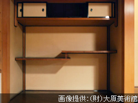

KURASHIKI YURINSO VILLA有隣荘
 大原家別邸となる有隣荘は、1928年（昭和3年）に大原孫三郎が、病弱な妻を気遣い「家族の為に落ち着いた住まいを」と建設されました。設計は、大原美術館や中国銀行の設計を手がけた薬師寺主計と明治神宮や築地本願寺の造営で知られる伊藤忠太、内外装デザインは児島虎次郎、庭園は近代日本庭園の先駆者であり平安神宮や山県有朋邸などの名庭を手がけた京都植冶の七代目小川治兵衞によって手がけられています。
大原家別邸となる有隣荘は、1928年（昭和3年）に大原孫三郎が、病弱な妻を気遣い「家族の為に落ち着いた住まいを」と建設されました。設計は、大原美術館や中国銀行の設計を手がけた薬師寺主計と明治神宮や築地本願寺の造営で知られる伊藤忠太、内外装デザインは児島虎次郎、庭園は近代日本庭園の先駆者であり平安神宮や山県有朋邸などの名庭を手がけた京都植冶の七代目小川治兵衞によって手がけられています。
緑色の瓦屋根が目立つことで「緑御殿」とも呼ばれています。この艶やかな緑色の瓦は、特殊な釉薬が使われており、泉州堺の瓦職人に特別注文したものです。現在の価格で1枚3万円程だったといわれています。
また、1947年（昭和22年）には昭和天皇の宿泊所として使用されるなど大原家別邸の後は来賓館として使用され、多くの貴賓客をお迎えされていました。長く非公開とされてきましたが、1997年（平成9年）から年に春秋2回、大原美術館主催の特別展示室として公開されています。
屋根瓦
「緑御殿」と呼ばれていることでも有名なこの艶やかな緑色の瓦は、泉州堺の瓦職人に特別注文したもので、あえて色の違う瓦を組み合わせたのが特徴です。
庭園
 香川の庵治石や京都の鞍馬石、岡山の万成石が敷き詰められた庭園には児島虎次郎デザインによる椅子と机が置かれています。
香川の庵治石や京都の鞍馬石、岡山の万成石が敷き詰められた庭園には児島虎次郎デザインによる椅子と机が置かれています。
裏手庭
明るい表の庭園に対し、しっとりと落ち着かせた裏手庭。表と裏で陰陽の世界を現しています。
和室
広々とした開放的な和室からは庭園が望めます。高い天井と欄間には屋久杉を使用しています。
龍模様の欄間
児島虎二郎による龍のデザインは辰年生まれの大原孫三郎にちなんでいるのだそうです。
ちがい棚

和室の北側には二枚の棚板を左右から互い違いに組み合わせた、ちがい棚があります。
洋間
洋間には大きな御影石の暖炉があります。外壁は兵庫の竜山石によるセメントを用いています。
御影石の暖炉
御影石の暖炉に埋め込まれた石のプレートは児島虎二郎がエジプトで収集したものだといわれています。
温室
洋間から続いたガラス張りの小さな部屋は温室に使われていました。
取材協力：（財）大原美術館
一覧に戻る